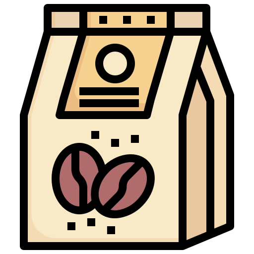

Despierta Tus Sentidos en Cada Sorbo
Descubre el equilibrio perfecto entre aroma, sabor y tradición. En La Tazzina Boutique Coffee, cada taza está elaborada con pasión y los mejores granos del mundo.
Más información¿Por qué elegir nuestro café?
Seleccionamos granos de origen ético y los tostamos artesanalmente para ofrecerte un café con cuerpo, aroma y frescura incomparables.
Disfruta de una experiencia auténtica en cada sorbo.

Tostado Artesanal
Cada lote se tuesta a mano para conservar el carácter único de cada grano.

Granos de Origen Ético
Trabajamos con caficultores que cultivan con respeto por la tierra y las personas.

Sabor Inolvidable
Una mezcla perfecta de intensidad y suavidad que deleita todos los sentidos.